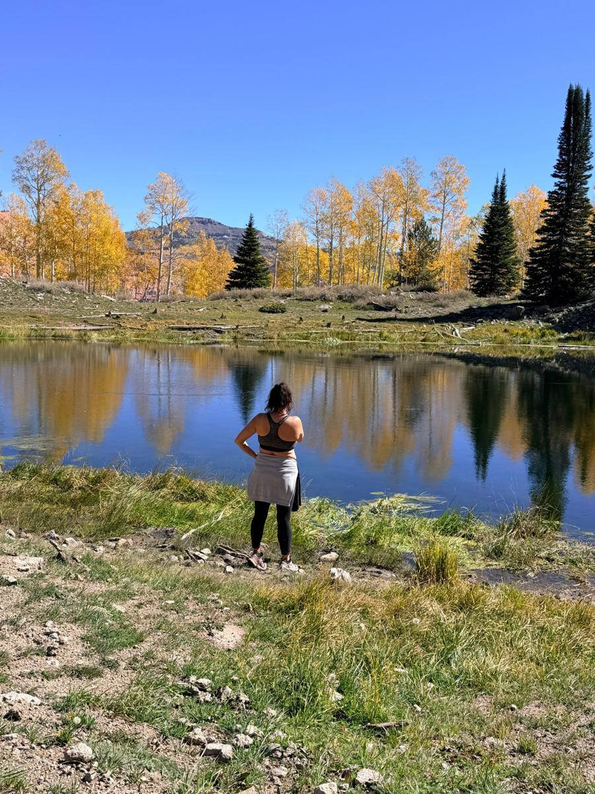
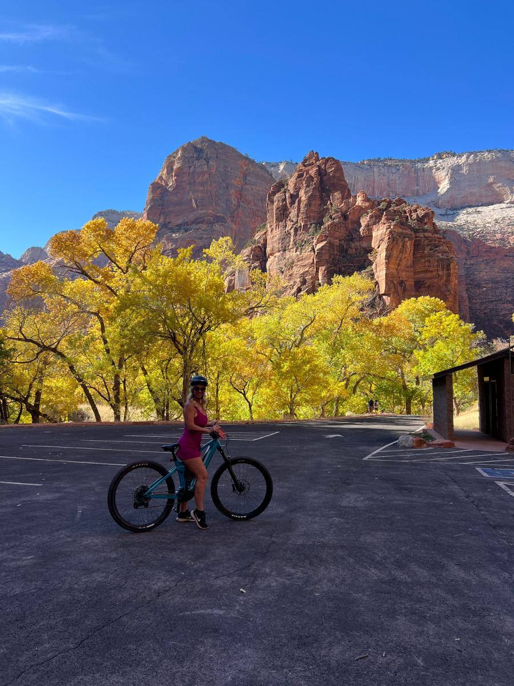
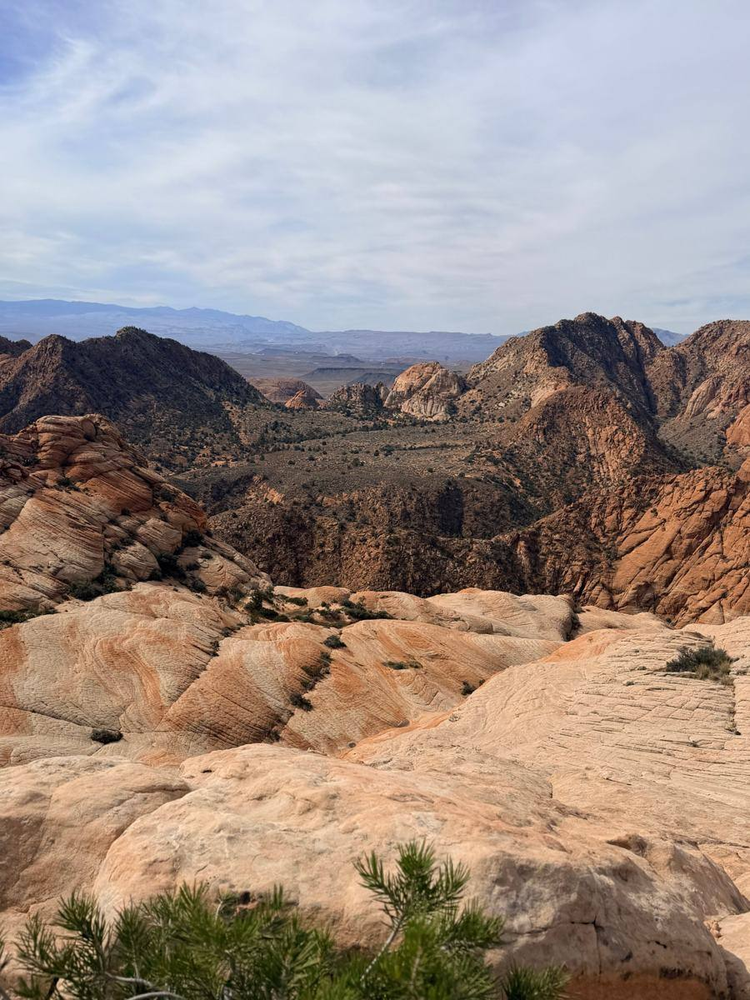
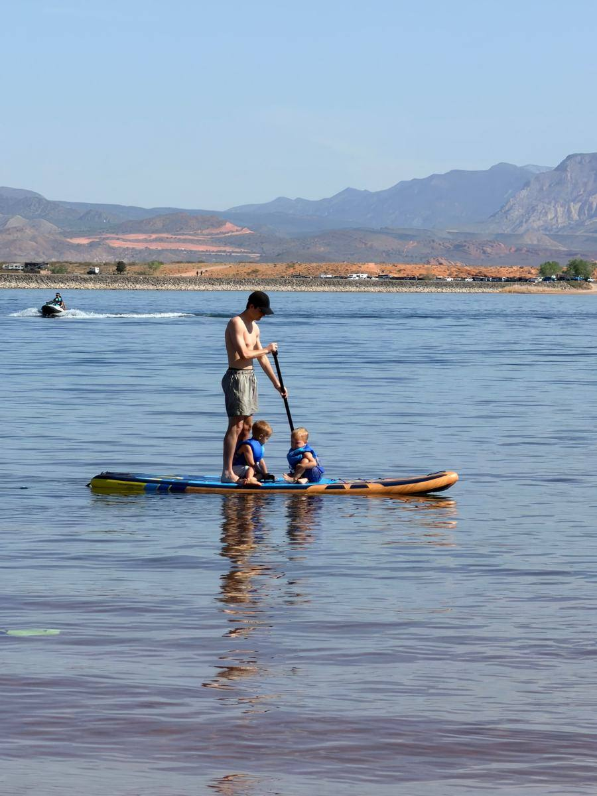

10 Reasons to Live in St. George, Utah (From Someone Who’s Lived Here 20+ Years)
By Alecia Jones ·The short answer
People move to St. George, Utah, for the weather, the red rock, and the pace. You get mild winters, Zion National Park about 45 minutes away, a flat 4.45% state income tax, and a real hospital and university in town. The trade-offs are hot summers, home prices well above the national median, and a lot of growth.
| Quick facts | St. George, Utah |
|---|---|
| Median sale price (April 2026) | $555,953 (Redfin via Stacker) |
| Utah state income tax (2026) | Flat 4.45% (EY) |
| Effective property tax rate (Utah) | About 0.48% (Tax Foundation) |
| Drive to Zion National Park | About 45 minutes |
| Drive to Las Vegas | About 2 hours |
| Winters | Mild; snow in town is rare |
| Summers | Hot; many days over 100°F |
Why I’m the one writing this
I’ve lived in Southern Utah for over 20 years. I raised my three kids here, and I’ve spent more than 10 of those years helping people buy and sell homes across Iron and Washington Counties.
So when someone asks me “Why would I move to St. George?” I don’t answer from a brochure. Here’s what I tell them, plus the parts the brochures leave out.
We moved to Cedar City 19 years ago, and I quickly realized we’d landed in the perfect spot for people who love both snow and water. In less than an hour we could be skiing at Brian Head, and in about the same time going the other way, we could be out on a boat at Sand Hollow. That’s the magic of Southern Utah, and from St. George, Sand Hollow is only about 20 minutes away.

The 10 reasons people love living in St. George
1. What is the weather really like in St. George?
Winters are the big draw. Most days from November through March are sunny and mild, and snow in town is a rare event worth taking pictures of. You can golf in January and hike in February.
Summer is a different story, and I’ll be honest about it below.
2. How close is St. George to Zion National Park?
About 45 minutes by car. Locals go on weekday mornings when the tourists are still at breakfast. Bryce Canyon, Grand Canyon’s North Rim, and Lake Powell are all realistic day trips or weekend drives. Learn more at the Zion National Park website.
Our family’s favorite Zion days aren’t only about hiking. We love renting e-bikes and riding the Pa’rus Trail and the Zion Canyon Scenic Drive, where pedal-assist e-bikes are allowed (NPS). On hot days, we cool off tubing the Virgin River just outside the park. Tubing isn’t allowed inside Zion, but outfitters in Springdale and Virgin will set you up with tubes and a shuttle (Greater Zion).

3. What can you do outside without leaving town?
This is the part people underestimate. You don’t need a national park to get outside here:
Snow Canyon State Park sits right on the edge of town, with lava tubes, sand dunes, and red rock trails.
Sand Hollow and Quail Creek reservoirs are where locals paddleboard, boat, and fish in warm water.
Pioneer Park has slot canyons and climbing rocks in the middle of the city.
Golf is everywhere, with courses for every budget and skill level.
Paved trails connect large parts of the city for walking and biking.

4. Are taxes lower in Utah?
Utah has a flat state income tax, and it keeps going down. The rate dropped to 4.45% for 2026, the sixth cut in six years (EY). Utah’s effective property tax rate is about 0.48% of a home’s value, and there’s no estate or inheritance tax (Tax Foundation).
For buyers coming from California, that math often matters as much as the scenery. I’m not a tax advisor, so run your numbers with a CPA.
5. Is St. George a good place to raise kids?
I raised three here, so I’m biased, but yes. Kids spend their weekends outside, the community feels tight, and families have lots of school options, including public, charter, and private.
What I love is that there’s always something going on, for every age. The grown-ups get live bands on the lawn on warm evenings and paddleboarding on the reservoirs. The kids get a park on just about every corner. Our weekends never felt boring.

6. Is St. George a good place to retire?
It’s one of the most popular retirement spots in the West, and it shows. The Huntsman World Senior Games bring thousands of athletes 50 and older to town every October. You’ll find active-adult communities, endless pickleball, and golf all winter.
7. Does St. George have good healthcare?
This matters a lot to retirees and families, and St. George delivers more than its size suggests. Intermountain St. George Regional Hospital is a major regional medical center that serves Southern Utah, plus parts of Nevada and Arizona. You don’t have to drive to Salt Lake or Vegas for most care.
8. Is there anything to do besides hiking?
Yes. Tuacahn Amphitheatre puts on Broadway-style shows outdoors against a red cliff, and it’s worth seeing at least once. Utah Tech University adds college sports, concerts, and a younger energy downtown. The historic downtown has a growing list of restaurants and local shops.
9. How easy is it to travel from St. George?
Easier than you’d think for a smaller city. St. George Regional Airport has direct flights to major hubs, and Las Vegas is about two hours down I-15 for more options. Salt Lake City is about four hours north.
10. Does St. George still feel like a small town?
It’s grown a lot, but the community still feels friendly. People wave, neighbors help, and you’ll run into someone you know at the grocery store. Neighborhoods range from historic areas near downtown to newer master-planned communities like Desert Color and Little Valley.
What are the downsides of living in St. George?
I’d rather you hear these from me than find out after you move. None of them are deal-breakers for most people, but they’re real.
| What people love | What to plan for |
|---|---|
| Mild, sunny winters | Summers regularly top 100°F; you’ll do outdoor things early in the morning |
| Growing city with new amenities | Growth brings traffic and construction, especially near I-15 |
| Homes in great neighborhoods | Prices run well above the national median, which was $396,173 in April 2026 (Redfin via Stacker) |
| Desert landscapes | Water is precious here; expect desert landscaping and water-conscious rules |
| Popular with tourists and retirees | Busy trails and full restaurants during peak seasons |
Prices here rose about 76% from April 2019 to April 2026, though they were roughly flat over the past year (Redfin via Stacker). That flat stretch is giving buyers more room to negotiate than they’ve had in years.
Frequently asked questions
How much does a house cost in St. George, Utah? The median sale price was $555,953 in April 2026, per Redfin. Starter homes (the 5th to 35th percentile) had a median of about $389,600 in January 2026 (Redfin via Stacker).
Is St. George, Utah a good place to live? For people who love sunshine, the outdoors, and a friendly community, yes. If you hate heat or want big-city nightlife, it may not be the right fit.
How hot does St. George get in the summer? Hot. Expect plenty of days over 100°F in July and August. Locals run errands early and spend afternoons at the pool or the lake.
Does it snow in St. George? Rarely in town. When it does, it’s usually gone by lunch. Pine Valley and Cedar City are close if you want real snow.
What are the best neighborhoods in St. George? It depends on your budget and lifestyle. Families, retirees, and second-home buyers usually land in different areas.
Is St. George a good place to buy a second home? Many people buy here as a winter home. Check HOA and city rules on short-term rentals before you buy, because they vary by neighborhood.
Thinking about making the move?
I’d love to help you figure out if St. George is the right fit and which part of town suits you. Call or text me at 435-518-9384, or email ImYourRealEstateGirl@gmail.com.
— Alecia Jones, Red Rock Real Estate
Sources
Redfin via Stacker: Are home prices going up in St. George in 2026?
Redfin via Stacker: How much does it cost to buy a house in St. George in 2026?
Have a question about Southern Utah real estate?
Call or text me at 435-518-9384, email ImYourRealEstateGirl@gmail.com, or search St. George homes for sale.